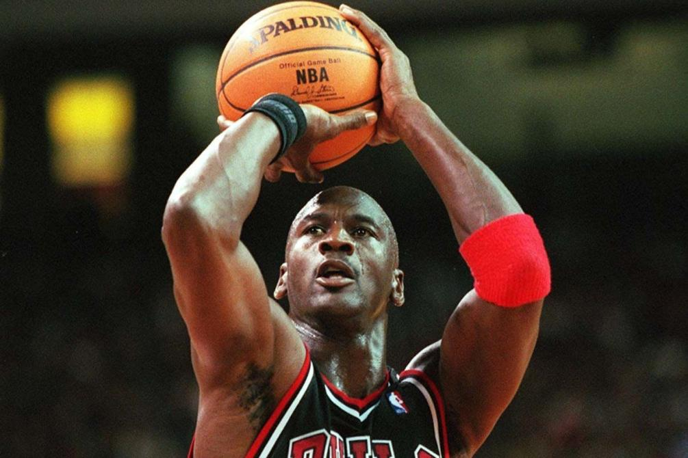
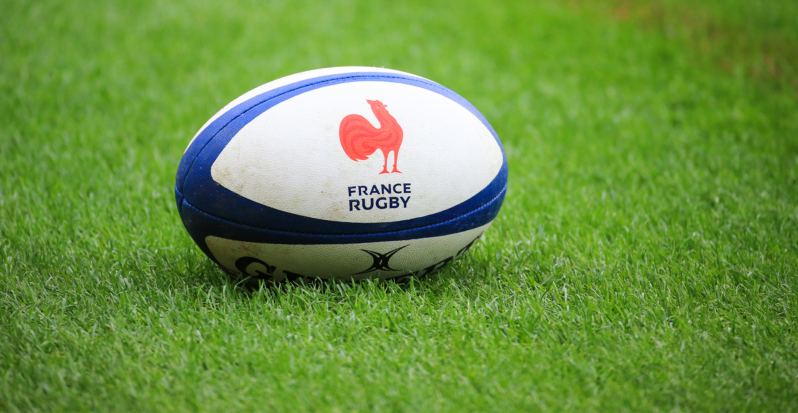

« Je suis profondément attristé, véritablement en souffrance et totalement en colère. » L’ancienne superstar de la NBA Michael Jordan a rejoint, dimanche 31 mai, les dizaines de grands sportifs noirs qui ont déploré publiquement, ces derniers
jours, la mort de George Floyd et dénoncé le « racisme enraciné » dans la société américaine. Cet homme afro-américain de 46 ans a été tué lors d’un contrôle de police la semaine dernière à Minneapolis, provoquant une vague d’émotion
et de manifestations à travers le pays. « Nous en avons assez », a poursuivi l’ancien basketteur Michael Jordan, se disant « aux côtés de ceux qui dénoncent le racisme enraciné et la violence envers les personnes de couleur dans notre
pays ». « Nous devons continuer à faire entendre pacifiquement nos voix contre l’injustice », a-t-il déclaré. Michael Jordan avait toujours refusé de prendre position sur les questions sociales et politiques tout au long de sa carrière
de joueur (1984-2003). Il rejoint ainsi la cohorte de voix émanant de la NBA (basket), de la NFL (football américain) et d’autres sports aux Etats-Unis, mais aussi à travers le monde, exigeant des changements sur la façon dont sont
traités les Noirs dans ce pays, en particulier par les policiers.
C’est au tour des salariés du groupe L’Equipe de voir leur avenir s’obscurcir. Dimanche 31 mai, un courriel de leur intersyndicale a rendu tangibles les rumeurs qui circulaient, « en interne comme à l’extérieur », sur les projets de la
direction : une réduction d’effectifs d’une centaine de personnes, à moins de la signature d’un accord de performance collective, synonyme de baisse des salaires et du nombre de jours de RTT. Autre carburant à la colère qui monte :
l’excellente santé financière d’ASO (Amaury Sport Organisation, organisateur du Tour de France, du Marathon de Paris, Rallye Dakar, Paris-Roubaix, etc.), autre entité du Groupe Amaury, dont la « plantureuse trésorerie », selon les
termes de l’intersyndicale, pourrait être mise à contribution. « Même un petit pourcentage de cette manne suffirait à éviter la restructuration qu’on veut nous imposer, assure l’un des auteurs du texte. Ne pas y avoir recours prouve
que la direction souhaite simplement profiter de la situation liée au coronavirus pour réduire les coûts. » En huit ans, le groupe a déjà connu quatre plans de départs.

Au rugby, les tympans ne sont pas habitués au silence. Du moins pas encore. Prévu le 5 septembre, le début de saison 2020-2021 de Top 14 pourrait s’effectuer dans des stades vides ou avec une jauge réduite à 5 000 personnes maximum en
raison de la situation sanitaire. « J’ai beau chercher, je n’ai pas le souvenir d’un match à huis clos à titre personnel », avoue Bernard Pontneau, président de la Section paloise (Pyrénées-Atlantiques). Pour le dirigeant de 63 ans,
un match sans public « n’entre pas dans la formule génétique du rugby ».Mais ce modèle allemand attire assez peu Franck Azéma. « Si on y est obligé, il faudra peut-être s’adapter à ça », soupire l’entraîneur et directeur sportif de
Clermont, qui sait de quoi il parle. En 2017, les Anglais des Saracens accueillent les Auvergnats en catimini pour un match de Coupe d’Europe au cœur de l’hiver. « Ils avaient évité de faire venir leurs supporteurs à cause du verglas,
par mesure de sécurité, se souvient le technicien clermontois. On s’entendait donner les consignes, ça manquait de saveur. Le partage avec le public est quelque chose de bien ancré dans le rugby. »